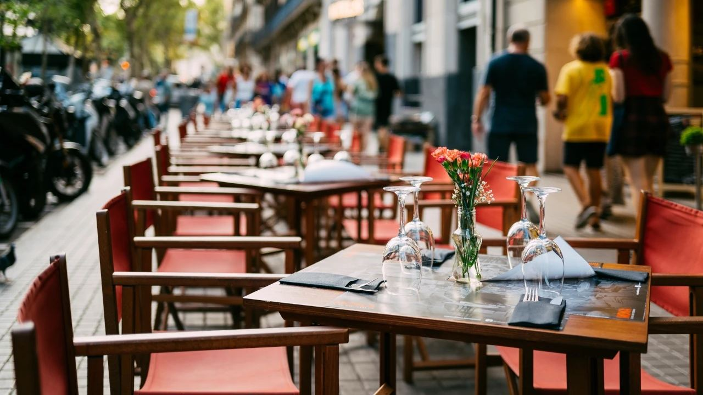
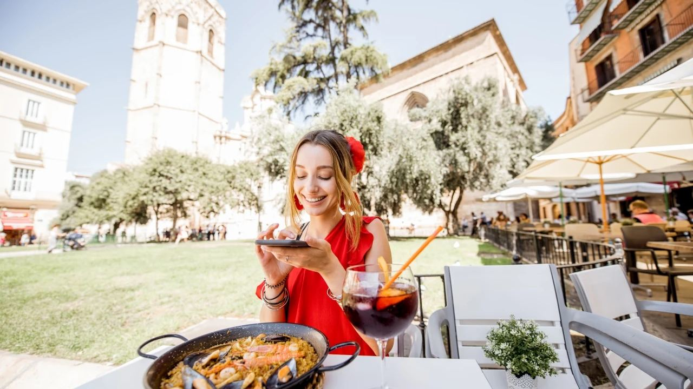
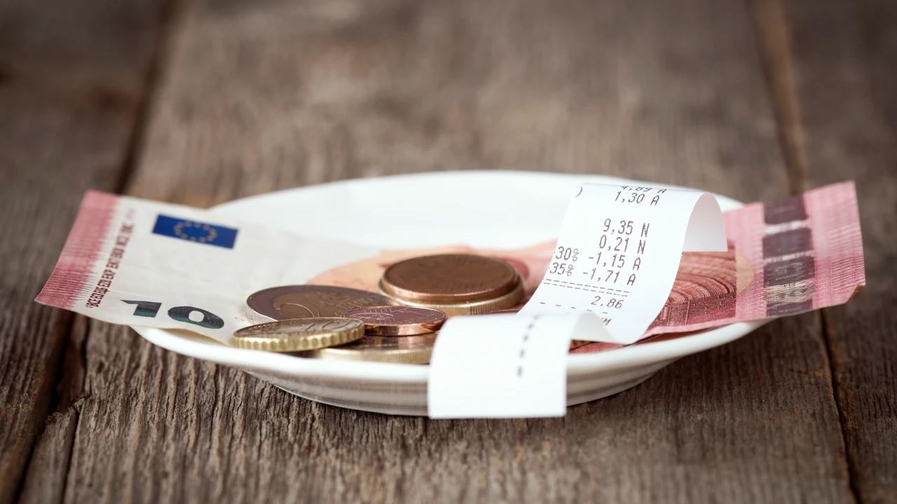
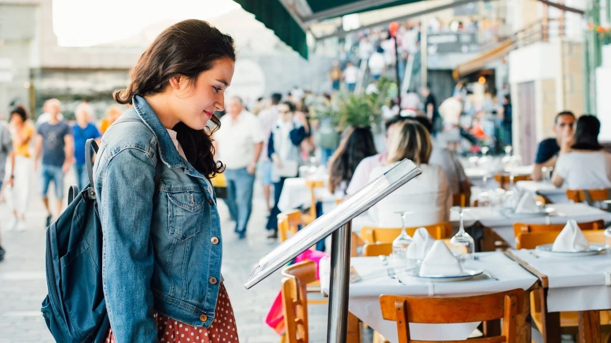
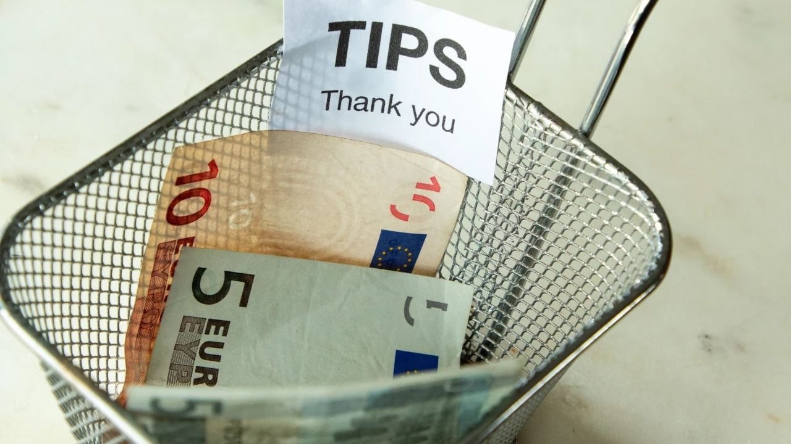

Living in Spain · Practical
Tipping in Spain – What Is Normal?
 By Anita Orłowska · · updated · 3 min read
By Anita Orłowska · · updated · 3 min read

In short: Tipping in Spain is optional and modest. Service is included in the price, and nobody will mind if you do not tip. If you were happy, round up in a bar or café, leave 5–10% in a restaurant, round up a taxi fare, and give a euro or two per bag to a hotel porter. Leave tips in cash, as most card machines have no tip option.
Coming from countries where tipping is expected, many visitors are unsure what to do in Spain. The good news: it is simple, and there is no pressure. Here is what locals do.
Do you have to tip in Spain?

No. In Spain, prices on the menu must include service and taxes, so you will not normally see a service charge on the bill. Waiters, bar staff and hotel employees are paid a regular wage and do not depend on tips.
A tip is a small thank you for good service, not an obligation. Not tipping is not seen as rude, even for good service. Spaniards themselves tip little, often just the small change. In tourist areas and upmarket places, a tip is more usual and always appreciated.
Restaurants
- Everyday restaurants and the menú del día: leave the small change or round up, for example €2–€3 on a €38 bill.
- A good dinner with attentive service: 5–10% is generous.
- Fine dining and Michelin-starred restaurants: around 10% for excellent service is a nice gesture, but still not expected.
If a large group booking includes a service charge, it will be stated clearly; then you do not need to tip extra.
Bars and cafés

For a coffee, a beer or a few tapas at the bar, most people leave nothing or the small coins from their change. If you sit on a terrace and are served at the table, rounding up to the nearest euro or leaving €1–€2 is common.
Paying by card
Most card machines in Spain do not offer a tip option, and staff may not receive tips added to the card payment. The usual way is to pay the bill by card and leave a few coins or a note in cash on the table or in the bill folder.
Hotels

- Porter: €1–€2 per bag.
- Housekeeping: €1–€2 per night, left at the end of your stay, is a kind gesture, especially in upmarket hotels.
- Concierge: €5–€20 if they arrange something special, such as a hard-to-get restaurant booking.
- Room service: a euro or two, unless a service charge is already included.
Taxis and other services
- Taxis: round up to the nearest euro, or a little more if the driver helps with luggage.
- Hairdressers, spas and beauty treatments: optional; a few euros or around 5% for a good treatment.
- Tour guides: €2–€5 per person for a group tour, more for a private guide.
- Private drivers, yacht crews and golf instructors: at the end of a day or a course, 5–10% is a generous thank you.
- Delivery drivers: optional, a euro or two.
Frequently asked questions
Is tipping expected in Spain?
No. Service is included in the price and staff are paid a wage. A tip is a small extra thank you for good service.
How much should I tip in a restaurant in Spain?
Round up or leave small change in everyday places, and 5–10% for a good dinner with attentive service. Around 10% in fine dining is generous.
Can I add a tip when paying by card in Spain?
Usually not. Most card machines have no tip option, so pay by card and leave the tip in cash.
Do you tip taxi drivers in Spain?
It is common to round up to the nearest euro, a little more if the driver helps with your bags.
Enjoy it like a local

In Spain the gesture matters more than the amount. A smile, a thank you and a few coins for good service go a long way, and you will be welcomed just as warmly next time whether you tipped or not. If you are thinking of spending more time here, ask us about homes close to the best restaurants and beaches on the Costa del Sol and Costa Blanca.